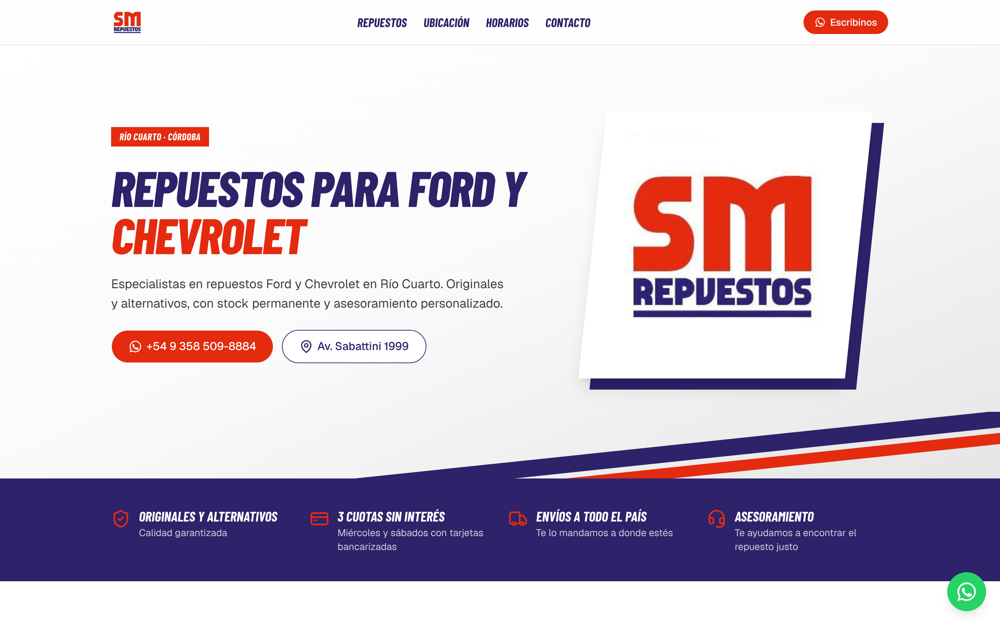
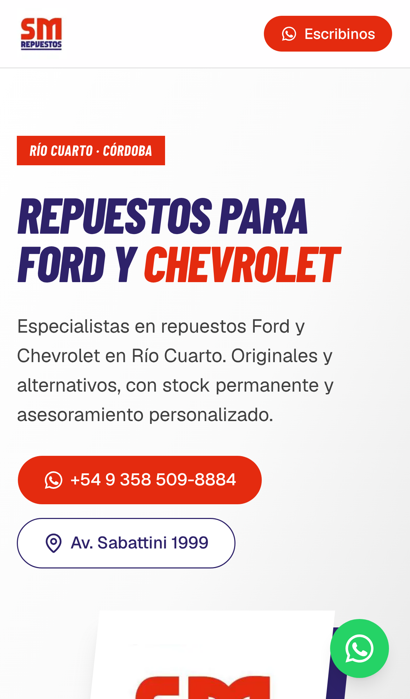
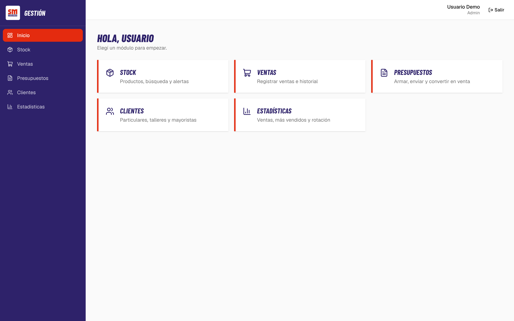
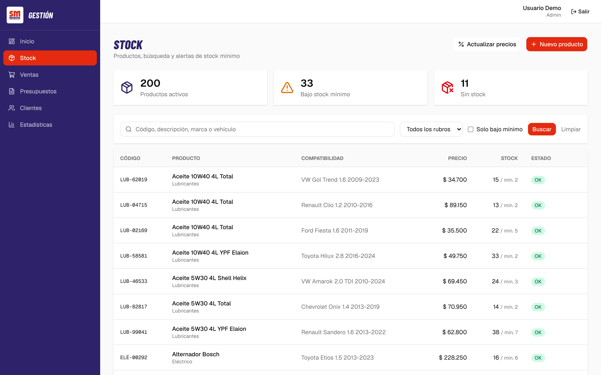
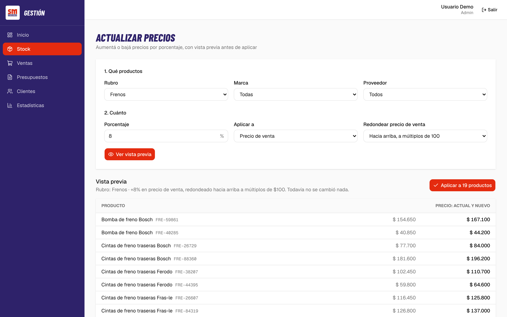
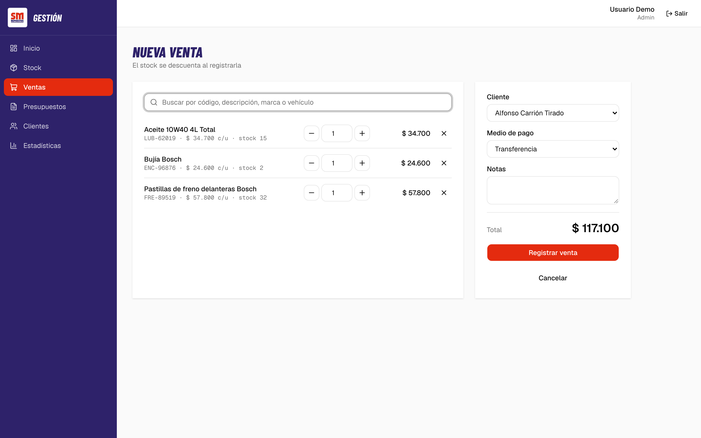
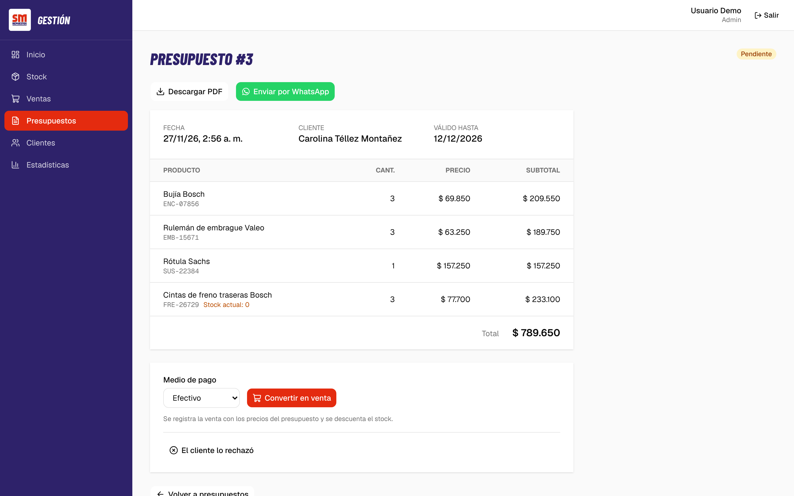
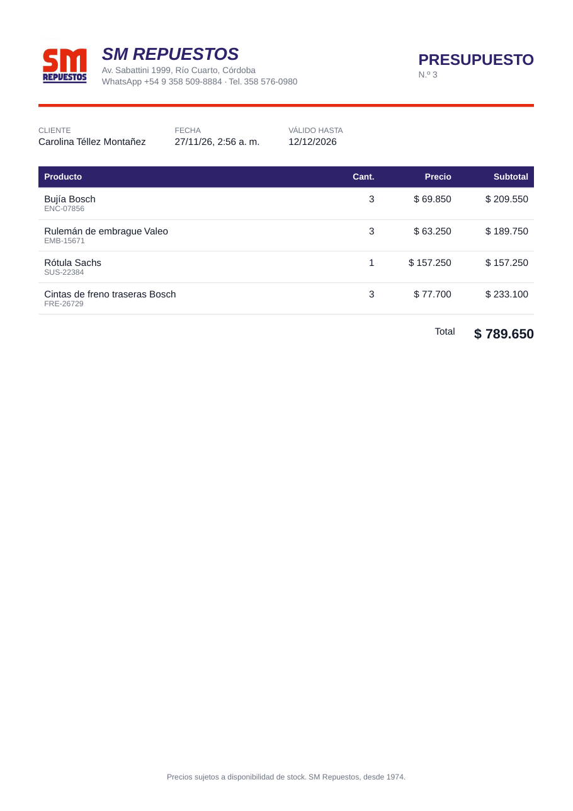
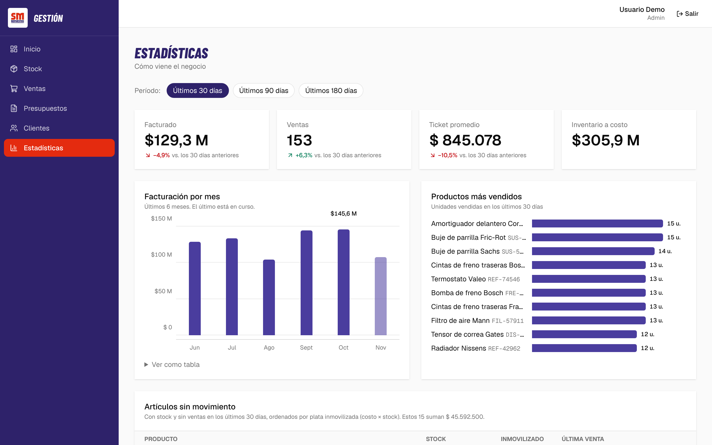

Una página web para que te encuentren más fácil y un sistema para ordenar el stock, las ventas y los presupuestos del mostrador.
Más de 50 años de trayectoria merecen una presencia online a la altura y un mostrador que funcione sin planillas ni papelitos. Por eso el proyecto tiene dos partes que trabajan juntas.
Para tus clientes. Muestra quiénes son, qué venden, dónde están y en qué horario atienden. Con un toque, te escriben por WhatsApp.
Cualquiera la puede ver desde el celular o la compu.
Para vos y tu equipo. Stock, ventas, presupuestos y números del negocio, todo en un mismo lugar y siempre al día.
Se entra con usuario y contraseña. Nadie más ve tu información.


Funciona desde el navegador, en la compu del mostrador o en una tablet. No hay que instalar nada.

Las pantallas de esta presentación muestran datos de ejemplo.
Saber qué hay, cuánto hay y qué hay que reponer, sin contar a mano.

Cuando llega una lista nueva, se actualizan cientos de precios en un minuto.

Registrar una venta lleva lo mismo que anotarla, y el stock se actualiza solo.

Presupuestos prolijos en segundos, listos para mandar.


Los números del negocio de un vistazo, para decidir con datos.

Menos tiempo en tareas repetitivas y más tiempo para atender.
Te encuentran en Google y te escriben por WhatsApp desde la página.
Cada venta descuenta sola. Se acabaron las planillas desactualizadas.
Con tu logo, por PDF o WhatsApp, y se convierten en venta con un clic.
Qué se vende, qué no y cómo viene el mes, sin hacer cuentas.
Productos, ventas y presupuestos conectados entre sí.
Cada persona entra con su usuario y los datos quedan resguardados.
Hoy: recorremos la página y el sistema con datos de ejemplo.
Qué ajustar, qué sumar y qué es prioridad para el negocio.
Cargamos los productos, precios y clientes del local.
Publicamos la página y el sistema queda listo para usar.
Capacitación al equipo y ajustes durante las primeras semanas.
¿Preguntas? Arrancamos con lo que más te sirva.